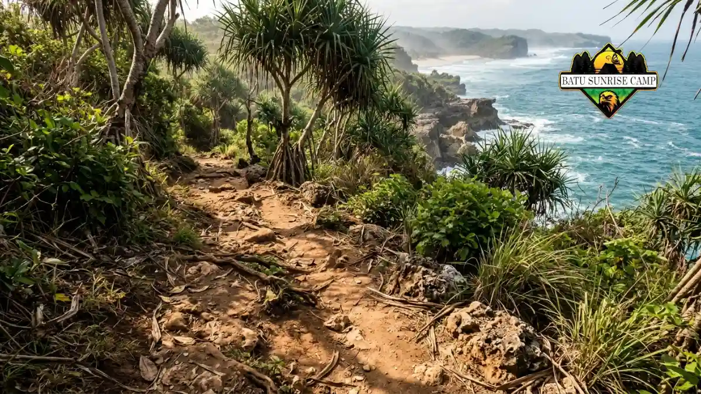

Lokasi camping pantai tersembunyi adalah area pesisir berpasir atau berbatu yang sulit dijangkau, minim pengunjung, dan cocok untuk berkemah dengan persiapan, izin, serta keselamatan matang.
- Pantai tersembunyi umumnya hanya bisa dicapai lewat trekking, jalur tanah, atau perahu kecil.
- Pilih lokasi di atas garis pasang tertinggi, terlindung dari angin, dan punya akses sumber air.
- Cek prakiraan cuaca dan gelombang BMKG sebelum berangkat, lalu pastikan izin pengelola atau warga setempat.
- Bawa semua kebutuhan sendiri, termasuk air minum, dan bawa pulang seluruh sampah.
- Kerahasiaan lokasi ikut menjaga kelestarian pantai dari kerusakan akibat kunjungan massal.
Apa Itu Lokasi Camping Pantai Tersembunyi?
Lokasi camping pantai tersembunyi adalah pesisir terpencil yang jarang dikunjungi dan umumnya hanya bisa dicapai lewat trekking, jalur tanah, atau perahu kecil.
Istilah "tersembunyi" tidak berarti rahasia mutlak. Pantai semacam ini biasanya tidak masuk daftar destinasi wisata populer, tidak memiliki loket tiket, dan tidak menyediakan warung, toilet, atau listrik. Pengunjung mengandalkan perbekalan sendiri.
Indonesia memiliki peluang besar untuk jenis wisata ini. Badan Informasi Geospasial (BIG) mencatat panjang garis pantai Indonesia sekitar 99.000 kilometer, angka resmi yang masih menjadi rujukan pada 2026.
Sebagian besar garis pantai itu tidak berupa kawasan wisata, sehingga banyak teluk kecil dan pesisir sepi yang jarang disentuh pengunjung.
Camping di tempat seperti ini cocok bagi orang yang mencari ketenangan, langit malam yang jelas, dan pengalaman alam yang lebih dekat. Konsekuensinya, tanggung jawab keselamatan berada penuh di tangan pengunjung.
Apa Saja Ciri Lokasi Camping Pantai Tersembunyi yang Layak?
Lokasi yang layak punya area datar di atas garis pasang tertinggi, terlindung dari angin kencang, dan memiliki jalur masuk serta jalur keluar yang jelas dan aman.
Ciri pertama adalah permukaan tanah. Area berpasir padat, tanah rumput pantai, atau lahan di belakang bukit pasir lebih stabil untuk mendirikan tenda dibanding pasir basah di tepi air.
Ciri kedua adalah perlindungan alami, misalnya tebing rendah, barisan pohon pantai, atau teluk sempit yang meredam angin.
Ciri ketiga adalah ketersediaan air tawar. Beberapa pantai terpencil berdekatan dengan mata air atau sungai kecil, tetapi kualitas airnya tidak boleh diasumsikan layak minum. Air dari alam tetap perlu disaring dan dimasak.
Ciri keempat adalah akses darurat. Meski sepi, lokasi yang layak masih memungkinkan pengunjung berjalan kembali ke permukiman terdekat atau mendapat sinyal di titik tertentu.
Pantai yang hanya bisa ditinggalkan lewat laut saat air pasang adalah lokasi berisiko tinggi untuk pemula.
Apa Saja Jenis Pantai Tersembunyi untuk Camping?
Jenis yang umum meliputi teluk kecil berpasir, pantai di balik tebing karang, pantai pulau kecil, dan pesisir hutan pantai yang hanya dicapai lewat jalur setapak.
Teluk kecil berpasir biasanya relatif tenang karena terlindung tanjung di kedua sisinya. Tipe ini sering menjadi pilihan favorit karena ombaknya lebih jinak dan permukaan pasirnya luas.
Pantai yang tersembunyi di belakang formasi tebing karang menyajikan panorama yang menakjubkan, meskipun demikian, umumnya memiliki zona datar yang terbatas dan permukaan batu yang runcing. Pengunjung perlu memeriksa jalur turun dengan cermat, terutama saat membawa ransel berat.
Pantai pulau kecil menuntut transportasi perahu dan koordinasi dengan nelayan atau pengelola setempat. Cuaca buruk dapat menunda kepulangan, sehingga cadangan logistik satu hari tambahan menjadi sangat disarankan.
Pesisir hutan pantai menawarkan keteduhan dan bahan penahan angin alami. Namun area ini kerap menjadi habitat satwa liar dan serangga, sehingga kebersihan makanan dan pelindung nyamuk perlu diperhatikan.

Jalur trekking menuju pantai terpencil sering kali berbatu dan memerlukan persiapan fisik serta alas kaki yang tepat.
Kapan Waktu Terbaik Camping di Pantai Tersembunyi?
Waktu terbaik umumnya adalah saat gelombang rendah dan cuaca stabil, yang di banyak wilayah Indonesia jatuh pada musim kemarau, tetapi pola ini berbeda antardaerah.
Indonesia memiliki dua musim utama, tetapi waktu mulai dan berakhirnya berbeda di tiap wilayah. Karena itu, jadwal camping sebaiknya mengikuti prakiraan terbaru dari BMKG, bukan hanya kalender musim umum.
Pesisir selatan Pulau Jawa, misalnya, cenderung bergelombang lebih tinggi pada periode tertentu dibanding perairan yang terlindung.
Pasang surut juga menentukan keselamatan. Menurut NOAA, sebagian besar wilayah pesisir mengalami pasang surut semi-harian dengan siklus sekitar 12 jam 25 menit antara dua pasang tertinggi. Artinya, pantai yang lebar saat surut bisa menyempit drastis beberapa jam kemudian.
Pasang tertinggi biasanya terjadi sekitar bulan baru dan bulan purnama. Hindari mendirikan tenda terlalu dekat garis air pada periode tersebut, dan catat jadwal pasang surut sebelum berangkat.
Bagaimana Cara Memilih Lokasi Camping Pantai Tersembunyi?
Pilih lokasi dengan menilai akses, kondisi gelombang, perlindungan angin, sumber air, status lahan, dan kemampuan kelompok, lalu bandingkan beberapa kandidat sebelum memutuskan.
Mulailah dari kemampuan kelompok. Jalur trekking tiga jam dengan ransel 12 kilogram jauh berbeda dibanding berjalan 20 menit dari jalan desa. Pemula sebaiknya memilih rute pendek terlebih dahulu.
Berikutnya, periksa status lahan. Sebagian pesisir berada di kawasan konservasi, lahan desa, atau tanah milik pribadi.
Menanyakan izin kepada perangkat desa atau pengelola setempat bukan sekadar formalitas, melainkan cara menghindari masalah dan mendapat informasi kondisi terbaru.
Terakhir, kumpulkan informasi dari berbagai sumber: peta satelit, laporan pendaki atau pengunjung terbaru, dan keterangan warga.
Metode menemukan serta memverifikasi lokasi dibahas lebih rinci dalam panduan cara menemukan lokasi camping pantai tersembunyi.
Apa yang Perlu Disiapkan untuk Camping di Pantai Tersembunyi?
Persiapan utama mencakup tenda tahan angin, air minum cukup, alat masak, penerangan, pertolongan pertama, penyaring air, dan wadah sampah yang bisa dibawa pulang.
Karena tidak ada warung atau toko, hitung kebutuhan logistik untuk durasi menginap ditambah cadangan satu hari.
Air adalah komponen paling berat sekaligus paling penting. Tenda juga perlu dipilih dengan cermat, sebab angin pantai dapat mencabut pasak biasa dari pasir.
Kelembapan dan garam mempercepat karat serta merusak peralatan elektronik. Bungkus ponsel, pengisi daya portabel, dan dokumen dalam kantong kedap air.
Daftar lengkap beserta alasan pemilihan tiap item tersedia dalam panduan perlengkapan camping di pantai. Susun barang berdasarkan prioritas agar ransel tetap ringan dan nyaman dibawa.
Bagaimana Menjaga Keselamatan Saat Camping di Pantai Terpencil?
Keselamatan dijaga dengan memeriksa prakiraan BMKG, memahami pasang surut, memberi tahu orang lain rencana perjalanan, dan tidak berenang di perairan berarus atau tanpa pengawasan.
Pantai tersembunyi tidak memiliki penjaga pantai atau pos medis. Karena itu, pengunjung perlu menyampaikan rencana perjalanan kepada keluarga atau teman, termasuk lokasi, jadwal pulang, dan kontak darurat.
Risiko utama meliputi arus balik, gelombang besar, kenaikan pasang yang memutus jalur, cuaca ekstrem, dehidrasi, dan cedera saat trekking.
Hindari berenang sendirian, terutama saat malam atau setelah hujan deras. Jika kondisi memburuk, mundur lebih awal lebih bijak daripada memaksakan rencana.
Prosedur keselamatan yang lebih terperinci, termasuk membaca kategori gelombang BMKG, dibahas di panduan tips aman camping di pantai terpencil.
Apa Kesalahan Umum Saat Camping di Pantai Tersembunyi?
Kesalahan paling umum adalah mendirikan tenda terlalu dekat air, meremehkan kebutuhan air minum, mengabaikan prakiraan cuaca, dan meninggalkan sampah di lokasi.
Kesalahan lain adalah memakai tenda tipis tanpa pasak khusus pasir. Angin malam di pantai sering lebih kencang dari perkiraan, sehingga tenda mudah roboh atau robek.
Banyak pengunjung juga datang menjelang sore tanpa waktu cukup untuk mendirikan tenda dan mencari area aman.
Tiba sebelum gelap memungkinkan Anda memeriksa tanda pasang tertinggi, membaca kondisi tanah, dan memilih titik tenda dengan tenang.
Kesalahan terakhir adalah membagikan lokasi secara berlebihan di media sosial tanpa memikirkan daya tampung.
Lonjakan pengunjung dapat menimbulkan sampah, merusak vegetasi pantai, dan mengganggu warga setempat.
Bagaimana Etika dan Aturan Camping di Pantai Tersembunyi?
Etika dasarnya adalah mengikuti prinsip Leave No Trace: bawa pulang sampah, hormati warga dan satwa, gunakan api seperlunya, dan tinggalkan lokasi dalam keadaan lebih baik.
Prinsip Leave No Trace mencakup merencanakan perjalanan, memakai permukaan yang sudah kokoh, membuang limbah dengan benar, tidak mengambil benda alam, meminimalkan dampak api, menghormati satwa, dan menghargai pengunjung lain.
Di pantai, hal ini berarti tidak menebang pohon untuk kayu bakar, tidak mengambil karang atau penyu, dan tidak mengganggu sarang burung atau penyu.
Gunakan kompor portabel untuk memasak, dan kubur limbah manusia hanya jika memang diperbolehkan serta jauh dari sumber air dan garis pasang.
Sapa warga setempat dengan sopan, patuhi aturan adat atau desa, dan hindari musik keras pada malam hari. Sikap ini menjaga hubungan baik sehingga pantai tetap terbuka bagi pengunjung berikutnya.
Kesimpulan
Memilih lokasi camping pantai tersembunyi berarti menyeimbangkan keindahan dengan keselamatan. Pastikan titik tenda berada di atas garis pasang tertinggi, cek prakiraan BMKG, dan bawa perbekalan lebih dari cukup.
Mulailah dengan rute pendek, pelajari cara menemukan dan memverifikasi lokasi, siapkan perlengkapan yang tepat, dan terapkan prosedur keselamatan. Untuk data cuaca dan gelombang resmi, rujuk situs BMKG.
Pantai yang tetap bersih dan sepi hari ini adalah hasil dari perilaku pengunjung sebelumnya. Jadilah bagian dari kebiasaan baik itu.